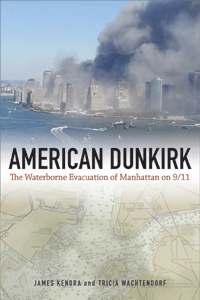

<body bgcolor="#FFFFFF" text="#000000" link="#0000FF" vlink="#CC0000" alink="#CC0000"><center><hr width="350" size="1" align="center" noshade><p>
<i>How an unplanned maritime response to the 9/11 disaster showed creativity, improvisation, and the power of community-based resources</i>
<br><hr width="350" size="1" align="center" noshade><p><a href="https://cdcshoppingcart.uchicago.edu/Cart/ChicagoBook.aspx?ISBN=&&PRESS=temple" target="_top">Buy this book!</a> | <a href="https://cdcshoppingcart.uchicago.edu/Cart/Cart.aspx?PRESS=temple" target="_top">View Cart</a> | <a href="https://cdcshoppingcart.uchicago.edu/Cart/Cart.aspx?PRESS=temple" target="_top">Check Out</a></p><p></p></center><!--none//--><h1>American Dunkirk</h1>
<H2>The Waterborne Evacuation of Manhattan on 9/11</H2>
<h3>James Kendra and Tricia Wachtendorf</h3>
paper: $24.95, Jun 16<BR>EAN:&nbsp;978-1-4399-0821-1<BR><font color=#990033>Not Yet Published Preorder</FONT><font size=-7><br>&nbsp;</font></p><p class="info">cloth: $84.50, <BR>EAN:&nbsp;978-1-4399-0820-4<BR><font color=#990033>Not Yet Published Preorder</FONT><font size=-7><br>&nbsp;</font></p><p class="info">e-book: $24.95, <BR>EAN:&nbsp;978-1-4399-0822-8<BR><font color=#990033>Not Yet Published Preorder</FONT><font size=-7><br>&nbsp;</font></p></p></td></tr></table>
<BR> <p class="info">196 pp<BR> 5.5 x 8.25<BR> <p class="info"><font size=-7>&nbsp;</font></p><p class="info">
</P><BLOCKQUOTE></BLOCKQUOTE>
<p>
When the terrorist attacks struck New York City on September 11, 2001, boat operators and waterfront workers quickly realized that they had the skills, the equipment, and the opportunity to take definite, immediate action in responding to the most significant destructive event in the United States in decades. For many of them, they were “doing what needed to be done.”<br>
<p><i>American Dunkirk </i>shows how people, many of whom were volunteers, mobilized rescue efforts in various improvised and spontaneous ways on that fateful date. Disaster experts James Kendra and Tricia Wachtendorf examine the efforts through fieldwork and interviews with many of the participants to understand the evacuation and its larger implications for the entire practice of disaster management.<br>
<p>The authors ultimately explore how people—as individuals, groups, and formal organizations—pull together to respond to and recover from startling, destructive events. <i>American Dunkirk </i>asks, What can these people and lessons teach us about not only surviving but thriving in the face of calamity?
<br>
<P CLASS="top"><A HREF="#top">BACK TO TOP</A></P>&nbsp;
<BR>&nbsp;
&nbsp;<P>
</P><BR>&nbsp;
<H2>About the Author(s)</H2><p>
<b>James Kendra</b> is Director of the Disaster Research Center and Professor in the School of Public Policy and Administration at the University of Delaware.
<br>
<p>
<b>Tricia Wachtendorf </b>is Associate Director of the Disaster Research Center and Associate Professor in the Department of Sociology and Criminal Justice at the University of Delaware.
<br>
<P CLASS="top"><A HREF="#top">BACK TO TOP</A></P>
<p><h2>Subject Categories</h2><A HREF="/tempress/sociology.html" TARGET="_top">Sociology</a><BR><A HREF="/tempress/nature.html" TARGET="_top">Nature and the Environment</a><BR><A HREF="/tempress/american.html" TARGET="_top">American Studies</a>
</p>
<P><I><a href="" onMouseOver="window.status='Click for other books in this series!'; return true;" onMouseOut="window.status="; return true;" target="_top”>
</p></p>
<p align="center"><a href="https://cdcshoppingcart.uchicago.edu/Cart/ChicagoBook.aspx?ISBN=&&PRESS=temple" target="_top">Buy this book!</a> | <a href="https://cdcshoppingcart.uchicago.edu/Cart/Cart.aspx?PRESS=temple" target="_top">View Cart</a> | <a href="https://cdcshoppingcart.uchicago.edu/Cart/Cart.aspx?PRESS=temple" target="_top">Check Out</a></p><p><font face="Arial" size="1"><a href="copyright.html" onMouseOver="window.status='Web Copyright Policy';return true;" onMouseOut="window.status=''" title="Web Copyright Policy">&copy;</a> <a href="http://www.temple.edu" target="new" onMouseOver="window.status='Link to Temple University home page';return true;" onMouseOut="window.status=''" title="Link to Temple University home page">Temple University</a>. All Rights Reserved. http://www.temple.edu/tempress/titles/2211_reg.html</font></p>